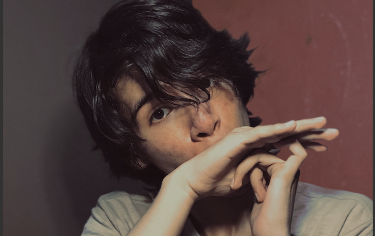
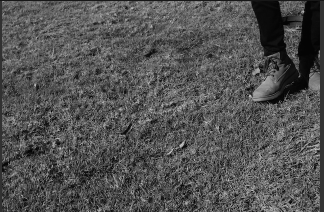
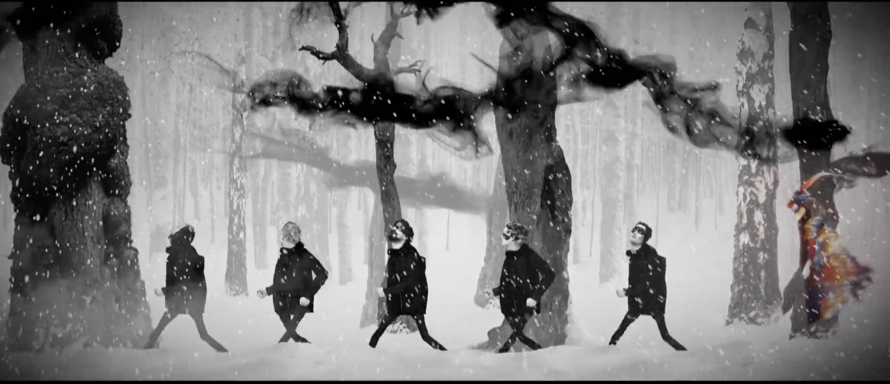
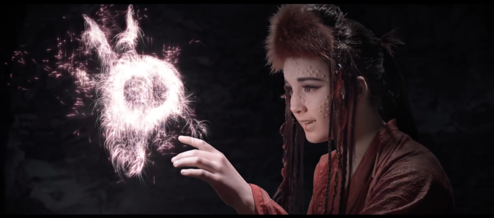
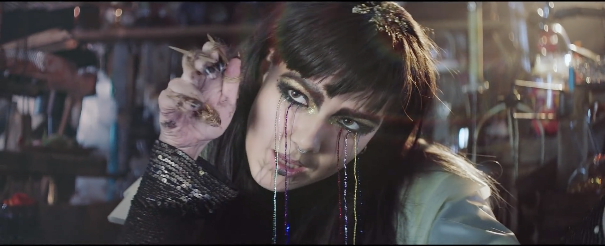
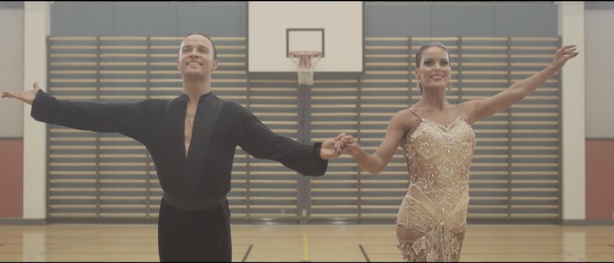

Tengo 21 años y estoy a mitad de camino en esta aventura que ha sido la carrera. Qué tanto aguardará la siguiente mitad?
Soy Guillermo y también Carlos. Uso ambos nombres con alegría. Nací y he vivido toda mi vida aquí en Querétaro. Me encuentro ya en quinto semestre de ISC, lo cual ni siquiera yo me creo, pues me costó dos cambios de carrera -ITI y LAD- asentarme.


Disfruto hacer de muchísimas cosas! Estoy en la Compañía de Teatro Musical del Campus, me gusta cantar y actuar; gané Mejor Actor Región Centro en el Festival Nacional de la Cultura y las Artes 2020; soy vicepresidente del grupo estudiantil más grande del Campus, Peer Mentors; disfruto de tomar fotos, abrazar a mis amigos, las matemáticas -cuando no me pierdo- y jugar videojuegos. Tengo conocimiento y estudios de 6 idiomas de los cuales manejo 4 de manera fluida.
A continuación hablaré un poco sobre los videos de las diferentes eras de una de mis bandas favoritas: Of Monsters and Men!
Este álbum nos introdujo a todos al único y fantástico mundo que crearon OMAM (Of Monsters and Men), dejando visible la influencia de sus orígenes islándicos, siendo notorio el dulce sonido folk y los animados himnos mountain-indie.
Little Talks: esta canción fue el primer gran hit de la banda y por la que más se les conoce. El video narra la historia de una tripulación en un barco volador que se encuentra con una chica de otro mundo, aparentemente buscando volver a casa. Ella se les une en su viaje y les proteje de bestias gigantes que rodean esas tierras misteriosas.


King and Lionheart: la cantante principal de la banda, Nanna Bryndis Hilmarsdottir, escribió esta canción para poner en música la parte de su vida en la que su padre y su madre se separaron, y cómo su hermano menor se fue a vivir lejos con su padre. El video es una referencia a esos hechos, presentando a dos hermanos siendo capturados en una guerra e intentando escapar a través de este extraño y fantástico mundo con motivos nórdicos.
Como muchos fans se percataron, el primer álbum giraba en torno al tema de los 'monstruos', y de mundos fantásticos. Pero la banda aún debía hablar sobre los 'hombres' ('men', en su nombre). Beneath The Skin es el regreso de la banda con un aura más oscura, acercándose más a las inseguridades humanas, sentimientos y pensamientos; aquello que yace debajo de la piel.
Crystals: Esta canción es el sencillo que lidera el segundo álbum de la banda. En el video observamos a la banda misma en un laboratorio de dimensiones infinitas, añadiendo magia y ciencia para dar vida a algo. El misterio y las letras abstractas aún están presentes en todas las canciones, y la manera en la que son usados en Crystals es, sin lugar a dudas, singular. Esta era también se distingue por los bellos videos de las letras que acompañaron a cada canción. Una emoción cruda está impresa en la interpretación por personas diferentes en cada video.


Wolves Without Teeth: a pesar de que esta canción no se aleja demasiado del sonido usual de la banda, el video oficial se distingue de los otros porque es fantástico de una manera totalmente diferente. De una manera real. El video sigue las prácticas y competencia de una pareja de baile. A través del video el contraste entre el mundo y esta pareja es visto y sentido. Somos capaces de mirar la sinergia y la manera amorosa en la que se complementan, que es de lo que trata la canción.
FEVER DREAM, lanzado en julio del año pasado, presenta a la banda cambiar las reglas de su propio juego. Apartándose del sonido folky e indie por el que son conocidos, buscan expander sus propios límites uniendo fuerzas con los synths y un nuevo sonido alternativo fresco. Mientras que mantiene las letras abstractas y las maravillosas melodías, es Of Monsters and Men en un mundo de color, nubes y cielos infinitos.
Alligator: sin duda la curiosidad despertó en cada fan en cuanto escucharon la canción comenzar por primera vez. El video nos presenta a Nanna como un ser reptiliano. La energía fresca de la banda se puede sentir a través de la canción y la explosión de color que acompaña al video de la letra.